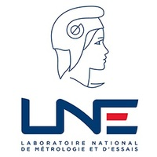
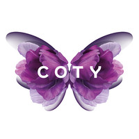

<!-- Jobs Start-->
<section class="tc-jobs sec-spacer">
  <div class="uk-container-center uk-container">
    <div class="uk-grid" data-uk-margin="">
      <div class="uk-width-1-3@m">
        <div class="title1">
          <span>04</span>
          <h3>Work Experience</h3>
        </div>
      </div>
      <div class="uk-width-2-3@m">
        <!-- CARRENET -->
        <div class="job-company">
          <div></div>
          <br/>
          <div class="job-date">
            <p>2018 – now</p>
            <span><strong>CARRENET</strong> - Solutions CRM (Boulogne-Billancourt 92)</span>
          </div>
          <div class="job-title">
            <h3>Consultant technique / Développeur Salesforce</h3>
          </div>
          <!--
          <ul>
            <li></li>
            <li></li>
            <li></li>
          </ul>
          -->
          <div class="job-desc">
            <div><em style="color: slategray"><u>Secteur d'activités</u> : Conseil en systèmes et logiciels
              informatiques</em></div>
          </div>
        </div>
        <!-- LNE -->
        <div class="job-company">
          <div></div>
          <br/>
          <div class="job-date">
            <p>2012 – 2014</p>
            <span><strong>LNE</strong> - Laboratoire National de métrologie et d'Essais (Paris 15 & Trappes 78)</span>
          </div>
          <div class="job-title">
            <h3>Chef de projet / Assistant Hygiène, Sécurité et Sûreté</h3>
          </div>
          <ul>
            <li>Maîtrise de l'évaluation des risques chimiques (Document Unique)</li>
            <li>Conception et animation de sessions de formation aux risques chimiques</li>
            <li>Élaboration d'un avant-projet de gestion des fiches de données de sécurité</li>
            <li>Évaluation de l'exposition à la pénébilité auprès des collaborateurs</li>
          </ul>
          <div class="job-desc">
            <div><em style="color: slategray"><u>Secteur d'activités</u> : Médical & Santé, Habitat, Défense & Énergie,
              Instrumentalisation, Transport & Industrie, Biens de consommation, Institutionnels et Collectivités</em>
            </div>
          </div>
        </div>
        <!-- COTY -->
        <div class="job-company">
          <div></div>
          <br/>
          <div class="job-date">
            <p>2011</p>
            <span><strong>COTY</strong> - Fragrance Production (Chartres 28)</span>
          </div>
          <div class="job-title">
            <h3>Ingénieur process & qualité</h3>
          </div>
          <ul>
            <li>Analyse de la performance : taux d'efficacité global (TEG)</li>
            <li>Identification des possibilités d'améliorations technique, de méthode et organisationnelle</li>
            <li>Pilotage d'un plan d'actions pour atteindre l'objectif des 75% de TEG</li>
          </ul>
          <div class="job-desc">
            <div><em style="color: slategray"><u>Secteur d'activités</u> : Cosmétiques & Parfumerie</em></div>
          </div>
        </div>
      </div>
    </div>
  </div>
</section>
<!-- Jobs End-->
